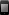

UDN
Search public documentation:
DevelopmentKitGemsCH
English Translation
日本語訳
한국어
Interested in the Unreal Engine?
Visit the Unreal Technology site.
Looking for jobs and company info?
Check out the Epic games site.
Questions about support via UDN?
Contact the UDN Staff
日本語訳
한국어
Interested in the Unreal Engine?
Visit the Unreal Technology site.
Looking for jobs and company info?
Check out the Epic games site.
Questions about support via UDN?
Contact the UDN Staff
UE3 主页 > 虚幻开发工具包精华文章
虚幻开发工具包说明

-
[[KismetOnlineSubsystem][KismetOnlineSubsystem][
 ]]
可以与 Game Center（游戏中心）/Steamworks 交互的 Kismet 节点。
]]
可以与 Game Center（游戏中心）/Steamworks 交互的 Kismet 节点。
- MOBA初学者工具包 - 供在虚幻引擎3中开发多人在线战争竞技游戏使用的初学者工具包。
- 平台游戏初学者工具包 - 供在虚幻引擎3中开发横版游戏使用的初学者工具包。
- 赛车初学者工具包 - 为使用虚幻引擎3开发赛车游戏的人提供的初学者工具包。
- PhysX粒子初学者工具包 - UDK中提供了关于添加PhysX粒子到UTGame中的初学者工具包示例。
- 实时策略初学者工具包 - 为使用虚幻引擎3（移动设备）开发实施策略游戏的人提供的初学者工具包。
- 添加针对地图的调试选项

- 如何在虚幻编辑器中添加对于关卡设计师而言好用的调试选项。
- 添加屏幕指示器 - 如何添加为玩家提供有用的位置标记的屏幕指示器。
- 创建 actor 选择框（实线框或虚线框） - 如何使用 HUD 渲染 actor 周围的选择框。
- 创建鼠标接口 - 如何将鼠标光标添加到游戏中，然后使它与世界进行交互。
- 创建画布 Kismet 节点 - 如何添加允许您在 HUD 上描画的 Kismet 节点。
- 创建连接字符串 Kismet 节点 - 如何添加允许您在 Kismet 内合并两个字符串的 Kismet 节点。
- 创建 For 循环 Kismet 节点 - 如何创建允许您在 Kismet 内创建循环的 Kismet 节点。
- 创建迭代器 Kismet 节点 - 如何创建允许您在关卡中搜索 actor 的 Kismet 节点。
- 角色光照 - 关于如何改进角色光照的指南。
- 保存并加载游戏状态 - 如何创建一个灵活的保存和加载游戏状态系统。
- Game Center（游戏中心）/Steamworks Kismet 节点 - 如何创建并使用可以与 Game Center（游戏中心）或 Steamworks 进行交互的 Kismet 节点。 - 新内容！
- 如何创建动态导航网格物体障碍物 - 如何将障碍物添加到导航网格物体，这样 AI 才能在它周围行走。
- 添加 HUD 变形 - 如何将变形样式添加到后期处理中。
- 如何通过 Kismet 或 Unrealscript 控制后期特效 - 如何添加允许您调整后期特效的 Kismet 节点。
- 如何创建 Sobel 边缘检测后期特效 - 如何使用 Sobel 操作符添加卡通线条作为后期特效。
- 创建简单的模糊阴影 - 如何在 actor 上添加简单的阴影。
- 在 Apple QuickTime 中浏览 FBX - 如何在 Apple QuickTime 视频播放器中浏览 FBX 文件。
- 如何向 actor 添加平面实例、网格物体或粒子特效 - 关卡设计师如何才能向在关卡中放置的 actor 添加平面实例、网格物体或粒子特效。
- 如何创建模块化 pawn - 如何创建一个具有可交换部分的 pawn，允许您将部分换进换出。